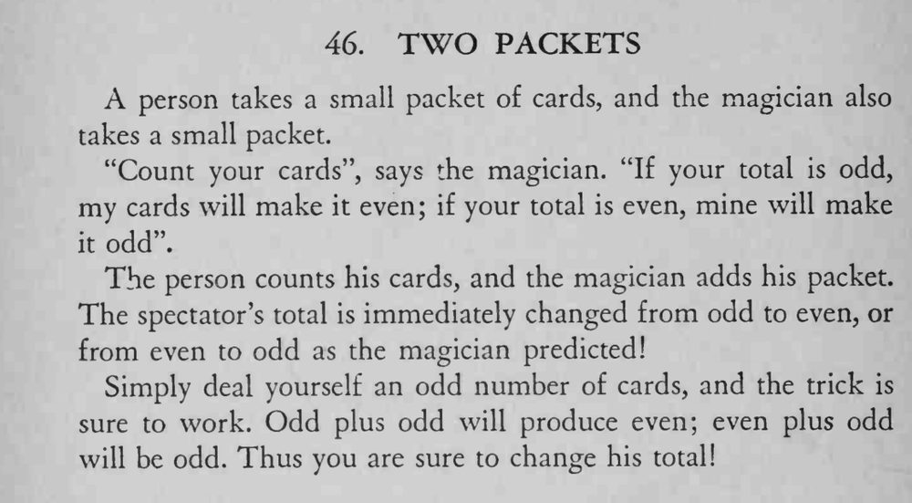

观众数清自己那叠牌，魔术师把自己的牌加进去，对方的总数立刻由奇数变偶数、或由偶数变奇数，与预言一致。
自己那叠必须始终是奇数张：奇数加奇数得偶数，偶数加奇数得奇数。

A person takes a small packet of cards, and the magician also takes a small packet. "Count your cards", says the magician. "If your total is odd, my cards will make it even; if your total is even, mine will make it odd". The person counts his cards, and the magician adds his packet. The spectator's total is immediately changed from odd to even, or from even to odd as the magician predicted! Simply deal yourself an odd number of cards, and the trick is sure to work. Odd plus odd will produce even; even plus odd will be odd. Thus you are sure to change his total!